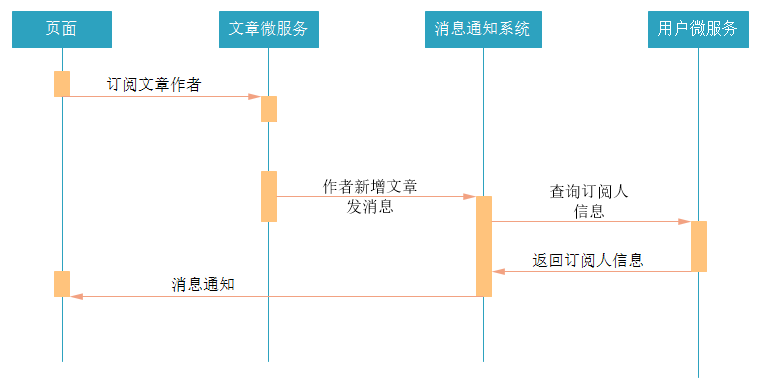

第4章 - 消息通知系统
学习目标：
- 了解消息通知系统的业务场景
- 了解消息通知和即时通讯区别
- 实现消息通知微服务的基本功能
- 实现文章订阅和群发消息
- 实现文章点赞和点对点消息
- 了解基于数据库实现的通知系统的问题
- 了解通知系统的改进方案
1 消息通知的业务场景
消息通知微服务的定位是“平台内”的“消息”功能，分为全员消息，订阅类消息，点对点消息。例如系统通知，私信，@类消息
全员消息
系统通知，活动通知，管理员公告等全部用户都会收到的消息
订阅类消息
关注某一类数据的用户，该类数据有更新时向用户发送的消息。例如关注某位大v的微博，公众号，订阅某位知名作家的专栏
点对点消息
某位用户对另外一位用户进行操作后，系统向被操作的用户发送的消息。例如点赞，发红包。
2 消息通知与即时通讯的区别
| 即时通信 | 消息通知 | |
|---|---|---|
| 传输的内容 | 包括文字聊天、语音消息发送、文件传输、音视频播放等吗，内容极其丰富。 | 以文字，超链接为主，辅以图片，不能再多了。 |
| 核心需求点 | 要求连接稳定可靠。就像网络游戏，如果总是掉线，你还玩的下去吗？ | 要求消息的高送达率，也就是说“这件事儿一定要想尽办法通知到对方”。对延时要求不高。 |
| 系统建设成本 | 存储成本高（图片，视频等）。基于TCP协议，需建设或租用多线机房，基建成本高。 | 一般只保存文本消息，存储成本低。可根据用户量自由调整服务器集群配置。 |
| 交互方式 | 任何消息均可回复 | 消息一般被设计为“仅通知，不需要回复” |
| 技术实现 | XMPP，MQTT，Strophe等全双工长连接协议 | JMS，AMQP，http等等各种协议 |
3 搭建消息通知微服务
3.1 业务分析
用户可以对文章作者进行订阅，当被订阅的用户发布新的文章时，可以通过消息通知系统发送消息给订阅者。
流程如下：

3.2 表结构分析
把资料中的sql脚本导入到数据库中，创建数据库和表。
十次方消息通知微服务总共需要两张数据库表，tb_notice 和 tb_notice_fresh。
消息通知表 tb_notice
保存用户的消息通知
字段名 类型 字段说明 id int ID receiverId varchar 接收消息用户的ID（userId） operatorId varchar 进行操作用户的ID action varchar 操作类型（评论，点赞等） targetType varchar 被操作的对象，例如文章，评论等 targetId varchar 被操作对象的id，例如文章的id，评论的id createtime datetime 发表日期 type varchar 消息通知类型 state varchar 状态：0 未读；1 已读
待推送消息表 tb_notice_fresh
保存准备推送给用户的消息通知
字段名 类型 字段说明 userId varchar 用户ID noticeId varchar 通知id
3.2 搭建消息通知微服务
在tensquare_parent父工程下创建tensquare_notice子模块
修改pom.xml文件，添加下面的配置
<dependencies><!-- mybatis-plus begin --><dependency><groupId>com.baomidou</groupId><artifactId>mybatisplus-spring-boot-starter</artifactId><version>${mybatisplus-spring-boot-starter.version}</version></dependency><dependency><groupId>com.baomidou</groupId><artifactId>mybatis-plus</artifactId><version>${mybatisplus.version}</version></dependency><!-- mybatis-plus end --><dependency><groupId>com.alibaba</groupId><artifactId>druid-spring-boot-starter</artifactId><version>1.1.9</version></dependency><dependency><groupId>mysql</groupId><artifactId>mysql-connector-java</artifactId></dependency><dependency><groupId>com.tensquare</groupId><artifactId>tensquare_common</artifactId><version>1.0-SNAPSHOT</version></dependency><dependency><groupId>org.springframework.boot</groupId><artifactId>spring-boot-starter-data-redis</artifactId></dependency><dependency><groupId>org.springframework.cloud</groupId><artifactId>spring-cloud-starter-netflix-eureka-client</artifactId></dependency><dependency><groupId>org.springframework.cloud</groupId><artifactId>spring-cloud-starter-openfeign</artifactId></dependency></dependencies>
在resources文件夹下添加application.yml文件，并添加下面的配置
xxxxxxxxxxserverport9014springapplicationnametensquare-noticedatasourcedriver-class-namecom.mysql.jdbc.Driverurljdbcmysql//192.168.200.1283306/tensquare_notice?characterEncoding=utf-8usernamerootpasswordrootredishost192.168.200.128# Mybatis-Plus 配置mybatis-plus# mapper-locations: classpath:/mapper/*Mapper.xml#实体扫描，多个package用逗号或者分号分隔typeAliasesPackagecom.tensquare.notice.pojoglobal-configid-type1 #0:数据库ID自增 1:用户输入iddb-column-underlinefalserefresh-mappertrueconfigurationmap-underscore-to-camel-casetruecache-enabledtrue #配置的缓存的全局开关lazyLoadingEnabledtrue #延时加载的开关multipleResultSetsEnabledtrue #开启延时加载，否则按需加载属性log-implorg.apache.ibatis.logging.stdout.StdOutImpl #打印sql语句,调试用eurekaclientservice-urldefaultZonehttp//127.0.0.16868/eureka/instanceprefer-ip-addresstrue
创建启动类
新建com.tensquare.notice包，并在该包下新建NoticeApplication，添加如下代码
xpublic class NoticeApplication {public static void main(String[] args) {SpringApplication.run(NoticeApplication.class, args);}public IdWorker idWorkker(){return new IdWorker(1, 1);}}编写pojo
xxxxxxxxxx("tb_notice")public class Notice implements Serializable {(type = IdType.INPUT)private String id;//IDprivate String receiverId;//接收消息的用户IDprivate String operatorId;//进行操作的用户ID(exist = false)private String operatorName;//进行操作的用户昵称private String action;//操作类型（评论，点赞等）private String targetType;//对象类型（评论，点赞等）(exist = false)private String targetName;//对象名称或简介private String targetId;//对象idprivate Date createtime;//创建日期private String type; //消息类型private String state; //消息状态（0 未读，1 已读）//set get...}xxxxxxxxxx("tb_notice_fresh")public class NoticeFresh {private String userId;private String noticeId;//set get...}编写dao
xxxxxxxxxxpublic interface NoticeDao extends BaseMapper<Notice> {}xxxxxxxxxxpublic interface NoticeFreshDao extends BaseMapper<NoticeFresh> {}com.tensquare.notice.config添加配置
xxxxxxxxxx//配置Mapper包扫描("com.tensquare.notice.dao")public class MyBatisPlusConfig {public PaginationInterceptor createPaginationInterceptor() {return new PaginationInterceptor();}}
3.3 实现基本增删改查功能
需要实现功能：
- 根据id查询消息通知
- 根据条件分页查询消息通知
- 新增通知
- 修改通知
- 根据用户id查询该用户的待推送消息（新消息）
- 删除待推送消息（新消息）
编写Controller
xxxxxxxxxx("notice")public class NoticeController { private NoticeService noticeService; // 1. 根据id查询消息通知 // http://127.0.0.1:9014/notice/{id} GET (value = "{id}", method = RequestMethod.GET) public Result selectById( String id) { Notice notice = noticeService.selectById(id); return new Result(true, StatusCode.OK, "查询成功", notice); } // 2. 根据条件分页查询消息通知 // http://127.0.0.1:9014/notice/search/{page}/{size} POST (value = "search/{page}/{size}", method = RequestMethod.POST) public Result selectByList( Notice notice, Integer page, Integer size) { Page<Notice> pageData = noticeService.selectByPage(notice, page, size); PageResult<Notice> pageResult = new PageResult<>( pageData.getTotal(), pageData.getRecords() ); return new Result(true, StatusCode.OK, "查询成功", pageResult); } // 3. 新增通知 // http://127.0.0.1:9014/notice POST (method = RequestMethod.POST) public Result save( Notice notice) { noticeService.save(notice); return new Result(true, StatusCode.OK, "新增成功"); } // 4. 修改通知 // http://127.0.0.1:9014/notice PUT (method = RequestMethod.PUT) public Result updateById( Notice notice) { noticeService.updateById(notice); return new Result(true, StatusCode.OK, "修改成功"); } // 5. 根据用户id查询该用户的待推送消息（新消息） // http://127.0.0.1:9014/notice/fresh/{userId}/{page}/{size} GET (value = "fresh/{userId}/{page}/{size}", method = RequestMethod.GET) public Result freshPage( String userId, Integer page, Integer size) { Page<NoticeFresh> pageData = noticeService.freshPage(userId,page,size); PageResult<NoticeFresh> pageResult = new PageResult<>( pageData.getTotal(), pageData.getRecords() ); return new Result(true, StatusCode.OK, "查询成功", pageResult); } // 6. 删除待推送消息（新消息） // http://127.0.0.1:9014/notice/fresh DELETE (value = "fresh",method = RequestMethod.DELETE) public Result freshDelete( NoticeFresh noticeFresh) { noticeService.freshDelete(noticeFresh); return new Result(true, StatusCode.OK, "删除成功"); }}
编写Service
xxxxxxxxxxpublic class NoticeService { private NoticeDao noticeDao; private NoticeFreshDao noticeFreshDao; private IdWorker idWorker; public Notice selectById(String id) { return noticeDao.selectById(id); } public Page<Notice> selectByPage(Notice notice, Integer page, Integer size) { //封装分页对象 Page<Notice> pageData = new Page<>(page, size); //执行分页查询 List<Notice> noticeList = noticeDao.selectPage(pageData, new EntityWrapper<>(notice)); //设置结果集到分页对象中 pageData.setRecords(noticeList); //返回 return pageData; } public void save(Notice notice) { //设置初始值 //设置状态 0表示未读 1表示已读 notice.setState("0"); notice.setCreatetime(new Date()); //使用分布式Id生成器，生成id String id = idWorker.nextId() + ""; notice.setId(id); noticeDao.insert(notice); //待推送消息入库，新消息提醒 NoticeFresh noticeFresh = new NoticeFresh(); noticeFresh.setNoticeId(id);//消息id noticeFresh.setUserId(notice.getReceiverId());//待通知用户的id noticeFreshDao.insert(noticeFresh); } public void updateById(Notice notice) { noticeDao.updateById(notice); } public Page<NoticeFresh> freshPage(String userId, Integer page, Integer size) { //封装查询条件 NoticeFresh noticeFresh = new NoticeFresh(); noticeFresh.setUserId(userId); //创建分页对象 Page<NoticeFresh> pageData = new Page<>(page, size); //执行查询 List<NoticeFresh> list = noticeFreshDao.selectPage(pageData, new EntityWrapper<>(noticeFresh)); //设置查询结果集到分页对象中 pageData.setRecords(list); //返回结果 return pageData; } public void freshDelete(NoticeFresh noticeFresh) { noticeFreshDao.delete(new EntityWrapper<>(noticeFresh)); }}
3.4 完善返回的消息内容
数据库表设计的时候，为了提高性能，并没有保存用户昵称，文章标题等信息，只保存了主键id。但用户在查看消息的时候，只有id是很难阅读的，所以需要根据id，把用户昵称，文章标题等信息查询，并在返回消息之前设置到消息中。
由于消息通知微服务需要调用其他微服务获取字段信息，所以需要做 feign client 调用。
1） com.tensquare.notice.client包下添加ArticleClient和UserClient
xxxxxxxxxx(value="tensquare-article")public interface ArticleClient { /** * 根据ID查询文章 * * @param articleId * @return */ (value = "/article/{articleId}", method = RequestMethod.GET) public Result findByProblemId(("articleId") String articleId);}xxxxxxxxxx(value="tensquare-user")public interface UserClient { /** * 根据ID查询用户 * @param id * @return */ (value="/user/{id}",method = RequestMethod.GET) public Result findById(("id") String id);}
2） 修改用户微服务，添加根据id查询用户
编写Controller，添加以下逻辑
xxxxxxxxxx/** * 根据id查询用户 * @param id * @return */(value="/{id}",method = RequestMethod.GET)public Result selectById(("id") String id) { User user = userService.selectById(id); return new Result(true, StatusCode.OK, "查询成功", user);}
编写Service，添加以下逻辑
xxxxxxxxxxpublic User selectById(String id) { return userDao.selectById(id);}
3） 改造消息通知微服务，获取消息内容数据
修改com.tensquare.notice.service中的NoticeService，增加getNoticeInfo方法，修改selectById和selectList查询方法，为以下内容：
xxxxxxxxxx /** * 查询消息相关数据 * @param notice */ private void getNoticeInfo(Notice notice) { //获取用户信息 Result userResult = userClient.findById(notice.getOperatorId()); HashMap userMap = (HashMap) userResult.getData(); notice.setOperatorName(userMap.get("nickname").toString()); //获取文章信息 if ("article".equals(notice.getTargetType())) { Result articleResult = articleClient.findById(notice.getTargetId()); HashMap articleMap = (HashMap) articleResult.getData(); notice.setTargetName(articleMap.get("title").toString()); } } /** * 根据ID查询实体 * * @param id * @return */ public Notice selectById(String id) { Notice notice = noticeDao.selectById(id); getNoticeInfo(notice); return notice; } /** * 条件查询 * * @param notice * @return */ public Page<Notice> selectList(Notice notice, Integer page, Integer size) { Page<Notice> pageData = new Page<>(page, size); List<Notice> list = noticeDao.selectPage(pageData, new EntityWrapper<>(notice)); for (Notice n : list) { getNoticeInfo(n); } pageData.setRecords(list); return pageData; }
4）测试功能
需要开启tensquare-eureka，tensquare-user，tensquare-article，tensquare-notice四个微服务进行测试
4 文章订阅 - 实现群发消息功能
4.1 订阅文章作者
用户在登录十次方以后，可以查看文章。如果觉得文章好，可以订阅文章作者，从而可以收到这个作者发布的新文章的消息。所以需要完成根据文章id，订阅文章作者。
1） 功能分析
- 用户之间的文章订阅关系的数据存放在redis中。
- 用户订阅文章作者，则系统将作者的id放入用户自己的订阅集合（set类型），同时系统将用户的id放入文章作者的订阅者集合中。
- 由于redis的set集合，其中的数据是不重复的，所以不用担心重复数据的问题。
2） 代码实现
需要在tensquare_article微服务中添加根据文章id订阅文章作者的功能，在ArticleController中添加以下代码：
xxxxxxxxxx /** * 订阅或者取消订阅文章作者 * * @return */ (value = "/subscribe", method = RequestMethod.POST) private Result subscribe( Map map) { //根据文章id，订阅文章作者，返回订阅状态，true表示订阅成功，false表示取消订阅成功 Boolean flag = articleService.subscribe(map.get("userId").toString(), map.get("articleId").toString()); if (flag) { return new Result(true, StatusCode.OK, "订阅成功"); } else { return new Result(true, StatusCode.OK, "订阅取消"); } }
编写ArticleService
xxxxxxxxxx public Boolean subscribe(String userId, String articleId) { //根据文章id查询文章作者id String authorId = articleDao.selectById(articleId).getUserid(); String userKey = "article_subscribe_" + userId; String authorKey = "article_author_" + authorId; //查询该用户是否已经订阅作者 Boolean flag = redisTemplate.boundSetOps(userKey).isMember(authorId); if (flag) { //如果为flag为true，已经订阅,则取消订阅 redisTemplate.boundSetOps(userKey).remove(authorId); redisTemplate.boundSetOps(authorKey).remove(userId); return false; } else { // 如果为flag为false，没有订阅，则进行订阅 redisTemplate.boundSetOps(userKey).add(authorId); redisTemplate.boundSetOps(authorKey).add(userId); return true; } }
3） 启动微服务测试功能
需要开启tensquare-eureka，tensquare-article
4.2 新增文章群发消息
新增文章后，需要通知订阅的用户，文章微服务需要调用消息通知微服务，创建消息。

用户登录十次方后，访问的前端页面，页面需要定时轮询通知接口，获取消息。（接口已完成）

1） 新增NoticeClient，调用消息通知微服务
pom.xml添加依赖
xxxxxxxxxx<dependency> <groupId>org.springframework.cloud</groupId> <artifactId>spring-cloud-starter-openfeign</artifactId></dependency>
启动类添加注解
xxxxxxxxxx
在com.tensquare.article.client中编写NoticeClient，把消息通知的Notice类复制到文章微服务
xxxxxxxxxx(value = "tensquare-notice")public interface NoticeClient { /** * 添加消息 * @param notice * @return */ (value = "notice",method = RequestMethod.POST) public Result add( Notice notice) ;}
2） 修改ArticleService的save方法，进行消息通知
xxxxxxxxxx public void save(Article article) { //使用分布式id生成器 String id = idWorker.nextId() + ""; article.setId(id); //初始化数据 article.setVisits(0); //浏览量 article.setThumbup(0); //点赞数 article.setComment(0); //评论数 //新增 articleDao.insert(article); //TODO 使用jwt获取当前用户的userid，也就是文章作者的id String authorId = "3"; //获取需要通知的读者 String authorKey = "article_author_" + authorId; Set<String> set = redisTemplate.boundSetOps(authorKey).members(); for (String uid : set) { //消息通知 Notice notice = new Notice(); notice.setReceiverId(uid); notice.setOperatorId(authorId); notice.setAction("publish"); notice.setTargetType("article"); notice.setTargetId(id); notice.setCreatetime(new Date()); notice.setType("sys"); notice.setState("0"); noticeClient.add(notice); } }
5 文章点赞 - 实现点对点消息功能
5.1 实现文章点赞
编写ArticleController添加点赞方法：
xxxxxxxxxx//文章点赞(value = "thumbup/{articleId}", method = RequestMethod.PUT)public Result thumbup( String articleId) { //模拟用户id String userId = "4"; String key = "thumbup_article_" + userId + "_" + articleId; //查询用户点赞信息，根据用户id和文章id Object flag = redisTemplate.opsForValue().get(key); //判断查询到的结果是否为空 if (flag == null) { //如果为空，表示用户没有点过赞，可以点赞 articleService.thumbup(articleId); //点赞成功，保存点赞信息 redisTemplate.opsForValue().set(key, 1); return new Result(true, StatusCode.OK, "点赞成功"); } //如果不为空，表示用户点过赞，不可以重复点赞 return new Result(false, StatusCode.REPERROR, "不能重复点赞");}
编写ArticleService：
xxxxxxxxxxpublic void thumbup(String articleId) { Article article = articleDao.selectById(articleId); article.setThumbup(article.getThumbup() + 1); articleDao.updateById(article);}
5.2 实现点赞消息通知
修改ArticleService的点赞方法，增加消息通知：
xxxxxxxxxxpublic void thumbup(String articleId,String userid) { //文章点赞 Article article = articleDao.selectById(articleId); article.setThumbup(article.getThumbup() + 1); articleDao.updateById(article); //消息通知 Notice notice = new Notice(); notice.setReceiverId(article.getUserid()); notice.setOperatorId(userid); notice.setAction("thumbup"); notice.setTargetType("article"); notice.setTargetId(articleId); notice.setCreatetime(new Date()); notice.setType("user"); notice.setState("0"); noticeClient.add(notice);}
6 基于db实现的通知系统存在的问题
6.1 消息通知系统的构成
一个消息通知系统，其主要的构成有消息发送者，消息存储，消息接收者，新消息提醒机制
6.1.1 消息发送者
消息是由系统的操作者发出的吗？不一定。
消息发送的常规流程：
系统的开发者设置了某种消息发送的规则，规则中包含一些条件
规则中的条件都满足后，触发系统生成消息数据
系统将消息数据保存并推送给接收者
以前面文章订阅群发消息作来举例的话
规则：
1.1 用户订阅文章作者
1.2 文章作者发布了新文章
上面规则中的两个条件都满足后，系统就生成消息通知并推送给接收者，告诉接收者有新的文章
在这个例子中，消息真正的发送者是消息通知系统，而非操作者。
用户提前为系统设定好规则，系统按照规则发送消息。
6.1.2 消息存储
消息通知的存储包含消息通知实体数据的存储和新消息提醒数据的存储。
- 消息通知实体数据保存在tb_notice表中的数据
- 新消息提醒数据保存在tb_notice_fresh表中的数据
6.1.3 消息接收者
也就是消息的阅读者，是一条消息通知的最终目的地。
6.1.4 新消息提醒机制
系统产生新的消息通知后，必须有一个合理的机制或者方法来告知接收者有新的消息。否则接收者会郁闷且痛苦地在茫茫的数据海洋中手动去查找新消息。可以使用以下两种方式提醒新消息：
- 提醒新消息的数量
- 消息通知列表中新消息置顶并标记
6.2 现在消息通知存在的问题
6.2.1 数据库访问压力大
用户的通知消息和新通知提醒数据都放在数据库中，数据库的读写操作频繁，尤其是tb_notice_refresh表，访问压力大。
6.2.2 服务器性能压力大
采用页面轮询调接口的方式实现服务器向用户推送消息通知，服务器的接口访问压力大。
6.2.3 改进的方法
使用 rabbitmq 实现新消息提醒数据的缓存功能，替代tb_notice_refresh表
使用全双工长连接的方式实现服务器向用户推送最新的消息通知，替换轮询
- 页面使用websocket
- 微服务端使用异步高性能框架netty